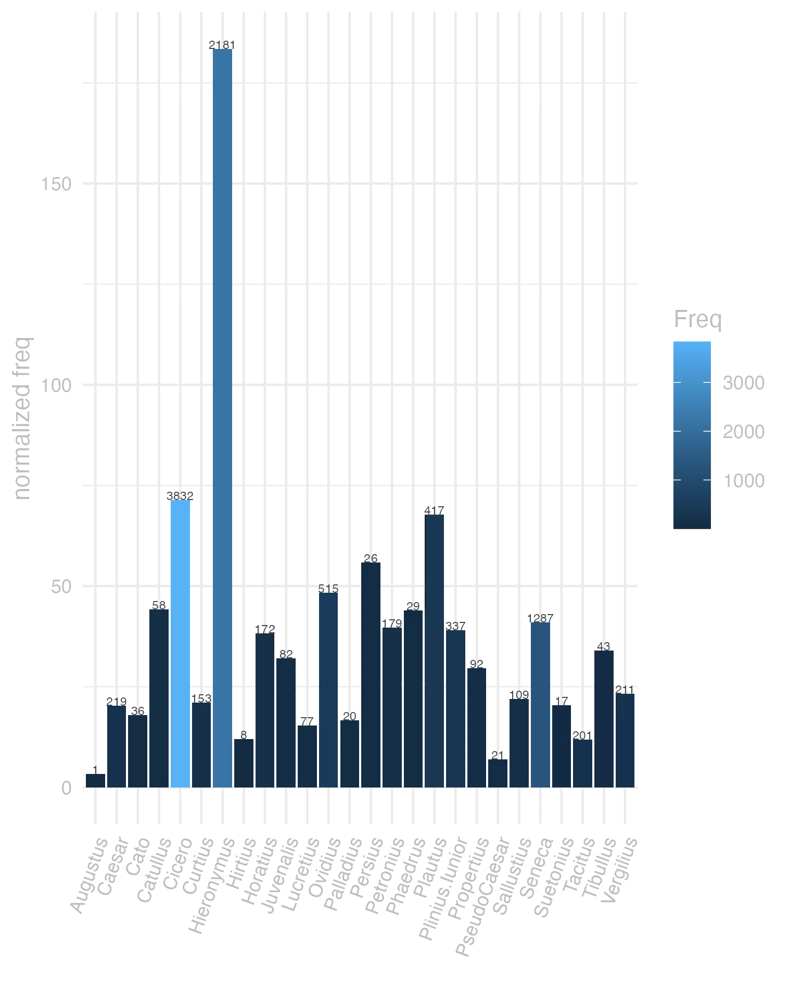
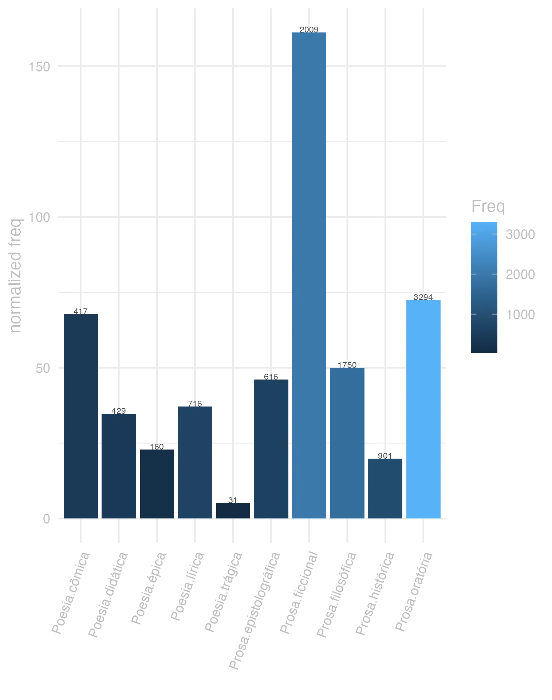
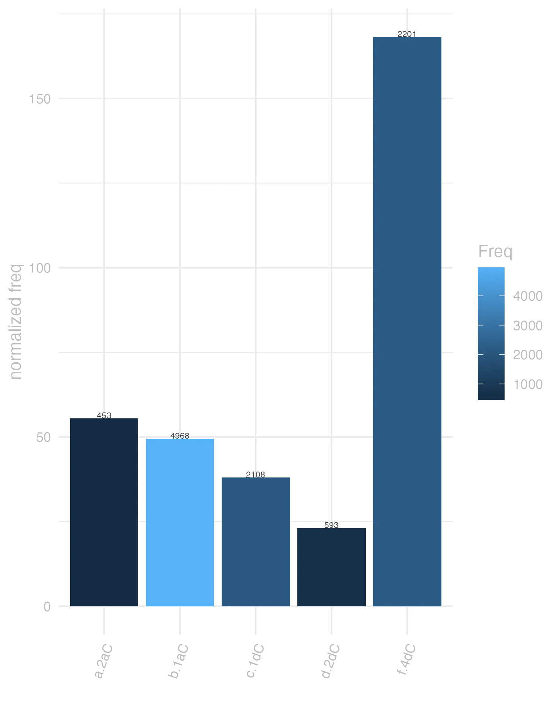

41 dico
41.0.0.1 forma
Classe: verbo
Flexo: 3 conjugao (sem vogal temtica)
F Dicassis Plaut. por Dicas
F Dice Plaut. por Dic
V Dico -is Vide Dos.
F Dico -is -ixi -ictum -cere
F Dixi pret. de Dico
F Dixti Cic. por Dixisti
deico, dico presente | indicativo | 1 pessoa singular | voz ativa
deicere, dicere presente | infinitivo | ativo
deicet, dicet futuro | indicativo | 3 pessoa singular | voz ativa
deixi, dixi, deixsi pretrito perfeito | indicativo | 1 pessoa singular | voz ativa
dictum particpio passado | nominativo neutro singular
dicturum particpio futuro | nominativo neutro singular
![This chart plots form by Freq, for the headword dico here are all the values plotted: form: dixit; Freq: 1074. form: dicere; Freq: 1030. form: dico; Freq: 656. form: dicam; Freq: 584. form: dicit; Freq: 512. form: dixi; Freq: 413. form: dicitur; Freq: 302. form: dicens; Freq: 236. form: dici; Freq: 228. form: dicunt; Freq: 227. form: diceret; Freq: 217. form: dixerunt; Freq: 217. form: dic; Freq: 216. form: dicebat; Freq: 197. form: dictum; Freq: 190. form: dicat; Freq: 183. form: dicis; Freq: 183. form: dicentes; Freq: 180. form: dicta; Freq: 148. form: dicet; Freq: 137. form: dicendi; Freq: 135. form: dicimus; Freq: 132. form: dixerit; Freq: 132. form: dicebant; Freq: 129. form: dixerat; Freq: 123. form: dixisse; Freq: 121. form: dicendum; Freq: 114. form: dixisset; Freq: 113. form: dices; Freq: 111. form: dicas; Freq: 98. form: dicuntur; Freq: 96. form: dicerent; Freq: 93. form: dixisti; Freq: 86. form: diximus; Freq: 82. form: dicerem; Freq: 66. form: dicant; Freq: 65. form: dicendo; Freq: 64. form: dicitis; Freq: 63. form: dicentem; Freq: 61. form: dicite; Freq: 61. form: dictu; Freq: 60. form: dixerim; Freq: 57. form: dixeris; Freq: 57. form: diceres; Freq: 50. form: dicatur; Freq: 46. form: dicturus; Freq: 42. form: dicenda; Freq: 40. form: dixero; Freq: 34. form: dicebantur; Freq: 33. form: diceretur; Freq: 33. form: dicebam; Freq: 32. form: dictus; Freq: 32. form: dicamus; Freq: 31. form: dicebatur; Freq: 31. form: dicemus; Freq: 30. form: dicturum; Freq: 30. form: dicent; Freq: 29. form: dicantur; Freq: 26. form: dicetur; Freq: 26. form: dicente; Freq: 25. form: dicerentur; Freq: 24. form: dicito; Freq: 24. form: dicar; Freq: 22. form: dixeram; Freq: 22. form: dictis; Freq: 21. form: dicebas; Freq: 20. form: dixerint; Freq: 20. form: dixere; Freq: 19. form: dicenti; Freq: 18. form: dicentur; Freq: 18. form: diceris; Freq: 16. form: dixissem; Freq: 16. form: dicentis; Freq: 14. form: dicentibus; Freq: 13. form: dicatis; Freq: 12. form: dicetis; Freq: 12. form: dicentium; Freq: 11. form: dicto; Freq: 11. form: dixissent; Freq: 11. form: dicendam; Freq: 10. form: dixeras; Freq: 10. form: dice; Freq: 9. form: dicor; Freq: 8. form: dixerimus; Freq: 8. form: dixistis; Freq: 8. form: dicturi; Freq: 7. form: dixisses; Freq: 7. form: dicendae; Freq: 6. form: dictae; Freq: 6. form: dictam; Freq: 6. form: dicturos; Freq: 6. form: dicendus; Freq: 5. form: dicundi; Freq: 5. form: dixeramus; Freq: 5. form: dixerant; Freq: 5. form: dixeritis; Freq: 5. form: dicendis; Freq: 4. form: dictas; Freq: 4. form: dicti; Freq: 4. form: dictos; Freq: 4. form: dicundo; Freq: 4. form: dixti; Freq: 4. form: dicentia; Freq: 3. form: diceremus; Freq: 3. form: dicerer; Freq: 3. form: diceretis; Freq: 3. form: dicier; Freq: 3. form: dicimur; Freq: 3. form: dixis; Freq: 3. form: dicturis; Freq: 2. form: deicerit; Freq: 1. form: dicae; Freq: 1. form: dicamur; Freq: 1. form: dicaris; Freq: 1. form: dicebar; Freq: 1. form: dicebare; Freq: 1. form: dicendarum; Freq: 1. form: dicende; Freq: 1. form: dici; Freq: 1. form: dicimini; Freq: 1. form: dicte; Freq: 1. form: dictorum; Freq: 1. form: dictura; Freq: 1. form: dicturam; Freq: 1. form: dicturo; Freq: 1. form: dicundae; Freq: 1. form: dixe; Freq: 1. form: est; Freq: 1](./Media/wordcloud__xx100-105-99-111xx__BY_form_Freq.webp)
41.0.0.2 significado
Grupo semntico: Discurso, Oratria
F 1 dizer, fallar. Cic.
V 1 dizer, orar, fallar
F 2 eleger. Liv.
V 2 Pro promittere aliquid alicui.
lexemas:afirmar, alegar, declarar
categoria:comunicao
valncias:[ACT,PAT]
synset_id:01016002-v
lexemas:afirmar, asseverar, jurar
categoria:comunicao
conceito:declarar ou afirmar solenemente e formalmente como verdade
valncias:[ACT,PAT] ou [ACT,ADDR,PAT]
synset_id:01011031-v
lexemas:articular, dizer, enunciar, falar, pronunciar
categoria:comunicao
conceito:falar, pronunciar, ou proferiri de uma certa maneira
valncias:[ACT,PAT] ou [ACT,MANN,PAT] ou [ACT]
synset_id:00978549-v
lexemas:chamar
categoria:cognio
conceito:anunciar ou proferir em voz alta
valncias:[ACT,PAT]
synset_id:00738747-v
lexemas:chamar
categoria:comunicao
valncias:[ACT,PAT] ou [ACT,PAT,EFF]
synset_id:00753881-v
lexemas:chamar, convocar
categoria:comunicao
conceito:solicitar, requerer, comandar algo
valncias:[ACT,PAT] ou [ACT,PAT,EFF] ou [ACT,INTT,PAT]
synset_id:00792471-v
lexemas:chamar, denominar, nomear
categoria:comunicao
conceito:atribuir um nome especfico (geralmente adequado)
valncias:[ACT,EFF,PAT] ou [ACT,PAT]
synset_id:01028748-v
lexemas:comandar, ditar, ordenar, prescrever, receitar
categoria:comunicao
valncias:[ACT,PAT] ou [ACT,PAT,ADDR] ou [ACT,PAT,EFF] ou [ACT,ADDR,PAT]
synset_id:00747135-v
lexemas:contar, dizer, falar
categoria:comunicao
conceito:expressar em palavras
valncias:[ACT,PAT] ou [ACT,ADDR,PAT] ou [ACT]
synset_id:01009240-v
lexemas:contar, informar
categoria:comunicao
conceito:fazer com que algo seja conhecido
valncias:[ACT,PAT] ou [ACT,PAT,ADDR]
synset_id:00952524-v
lexemas:contar, narrar, recontar
categoria:comunicao
conceito:narrar ou dar um relato detalhado sobre
valncias:[ACT,PAT] ou [ACT,ADDR,PAT]
synset_id:00953216-v
lexemas:conversar, dizer, falar, proferir, verbalizar
categoria:comunicao
conceito:expressar com a fala;
valncias:[ACT,PAT] ou [ACT]
synset_id:00941990-v
lexemas:declarar
categoria:comunicao
valncias:[ACT,PAT] ou [ACT,ADDR,PAT]
synset_id:00820801-v
lexemas:dedurar, falar demais
categoria:comunicao
conceito:revelar informaes
valncias:[ACT,PAT]
synset_id:00952841-v
lexemas:dialogar, falar
categoria:comunicao
conceito:trocar idia; falar com
valncias:[ACT,PAT] ou [ACT] ou [ACT,ADDR] ou [ACMP,ACT]
synset_id:00962447-v
lexemas:dizer, falar
categoria:comunicao
conceito:expressar em voz alta
valncias:[ACT,PAT]
synset_id:00979870-v
lexemas:dizer, falar, usar a lingua
categoria:comunicao
conceito:uso da linguagem
valncias:[ACT] ou [ACT,PAT]
synset_id:00963570-v
lexemas:dizer, recitar
categoria:comunicao
conceito:Recitar ou repetir um texto fixo
valncias:[ACT,PAT]
synset_id:00945499-v
lexemas:impetrar, intimar, mandar, ordenar
categoria:comunicao
conceito:dar instrues a ou diretamente a algum para fazer algo, com autoridade
valncias:[ACT,PAT] ou [ACT,PAT,ADDR] ou [ACT,ADDR,PAT]
synset_id:00746718-v
lexemas:mencionar, referir
categoria:cognio
conceito:ter em mente, se referir a
valncias:[ACT,REG] ou [ACT,PAT]
synset_id:00730052-v
lexemas:nomear
categoria:relao social
valncias:[ACT,PAT] ou [ACT,EFF,PAT]
synset_id:02396205-v
lexemas:supor, afirmar, declarar, dizer
categoria:comunicao
conceito:Afirmar como sua opinio ou julgamento
valncias:[ACT,PAT] ou [ACT,REG]
synset_id:01009821-v
F 1 aequi bonique dicere Ter. Fallar como deve ser e pede a razo.
V 1 conuenienter rationi dicere fallar conforme a raza
V X dicere alicui diem citar
V X dicere diem determinar, e assignar dia certo
F X dicere diem alicui Cic Assinar dia para apparecer em juizo
F X dicere salutem Cic Saudar, enviar saude
V X nomen dicere pr nome
V X sacramentum, uel sacramento dicere jurarem os soldados de defenderem a Republica
V X sententiam, uel pro sententia dicere dizer seu parecer
V X testimonium uel pro testimonio dicere testificar, depor com testemunho
41.0.0.3 uso
Ranking de frequncia: 23 posio neste corpus
Petrus autem dixit Vulg.Act.3.6
amen amen dico vobis Vulg.Ioan.1.51
ego autem quae dicenda fuerunt de te non praeterii Cic.Att.1.5.5
credo enim Deo quia sic erit quemadmodum dictum est mihi Vulg.Act.27.25
Petrus vero et Iohannes respondentes dixerunt ad eos Vulg.Act.4.19
et in diebus illis exsurgens Petrus in medio fratrum dixit Vulg.Act.1.15
hoc vere dixisti Vulg.Ioan.4.18
iudicibus reiciendis dies est dictus a. d. v Non. Quint. Cic.Att.4.16.5
interea rogabant eum discipuli dicentes Vulg.Ioan.4.31
per eos ne causam diceret se eripuit Caes.Gal.1.4.2
dicebant ergo discipuli ad invicem Vulg.Ioan.4.33
Cavenda etiam est gloriae cupiditas ut supra dixi Cic.Off.1.68
itaque ut stultus primus suam sententiam dicat Cic.Att.7.1.5
verum dicebat Cic.Att.7.1.8
respondens autem Simon dixit Vulg.Act.8.24
His mandavit quae diceret Ariovistus cognoscerent et ad se referrent Caes.Gal.1.47.5
et nemo potest dicere Dominus Iesus nisi in Spiritu Sancto Vulg.1Cor.12.3
dixi hanc legem Publium Clodium iam ante servasse Cic.Att.1.16.13
conversus autem Iesus et videns eos sequentes dicit eis Vulg.Ioan.1.38
cui et testimonium perhibens dixit Vulg.Act.13.22


